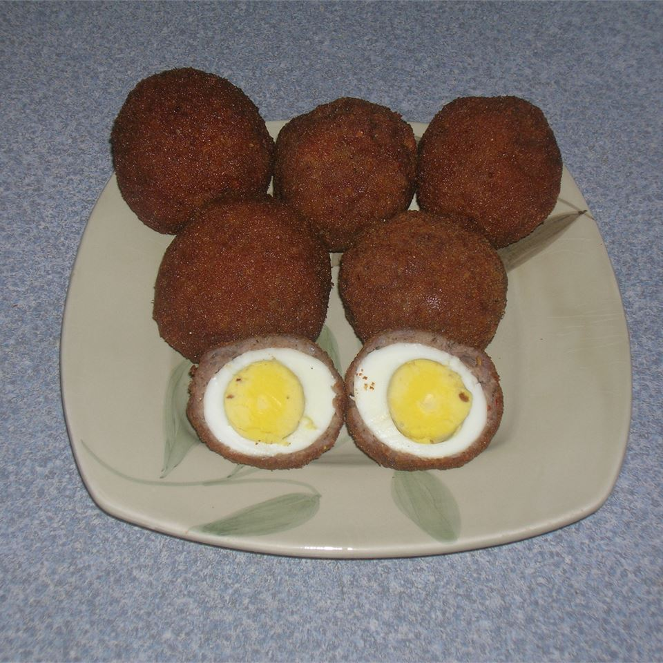

Scotch Eggs

A delicious and easy Christmas Eve recipe for your family.
Ingredients
- 1 quart oil for frying
- 4 eggs
- 2 lbs pork sausage
- 1 cup all-purpose flour
- 4 eggs, beaten
Directions
- Preheat oven to 350 degrees F (175 degrees C). Heat oil in deep-fryer to 375 degrees F (190 degrees C).
- Place eggs in saucepan and cover with water. Bring to boil. Cover, remove from heat, and let eggs sit in hot water for 10 to 12 minutes. Remove from hot water, cool and peel.
- Flatten the sausage and make a patty to surround each egg. Very lightly flour the sausage and coat with beaten egg. Roll in bread crumbs to cover evenly.
- Deep fry until golden brown, or pan fry while making sure each side is well cooked. Bake in the preheated oven for 10 minutes.
- Cut in half and serve over a bed of lettuce and sliced tomatoes for garnish. If mustard is desired it looks beautiful over this.
Source: allrecipes.com